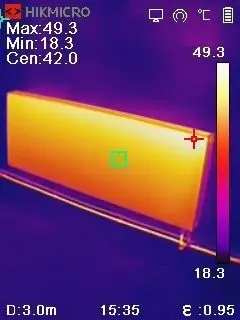
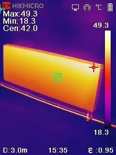

Termokamera + čištění topných systémů
Termokamera HIKMICRO
Díky použití termokamery jsme schopni okamžitě najít zanesené potrubí v topném systému, špatně cirkulující topnou vodu v radiátorech nebo v podlahovém topení.
Skrytou závadu vidíme okamžitě a tím pádem dokážeme i navrhnout řešení daného problému. Najdeme úniky tepla z místnosti, tepelné mosty nebo závady ve spalinových cestách.
Termokamera HIKMICRO je založena na moderní termografické technologií a speciálně navržena pro odhalování skrytých závad na místě. Tepelný rozsah měření je od -20°C do 550°C.
Úspěšně jsme absolvovali školení termovizního měření u firmy GHV Trading, kde jsme i termokameru zakoupili.
 

Čištění topných systémů
REMS Multi‑Push SLW – jen jeden přístroj s více než 10‑ti programy k proplachování a zkoušení tlaku pomocí stlačeného vzduchu nebo vody u rozvodů pitné vody a instalací topení.
Je to výkonná, kompaktní, elektronická proplachovací jednotka a jednotka pro provádění tlakových zkoušek s bezolejovým kompresorem.
Pro účely čištění a desinfekce používáme pouze originální přípravky Rems nebo BCG.